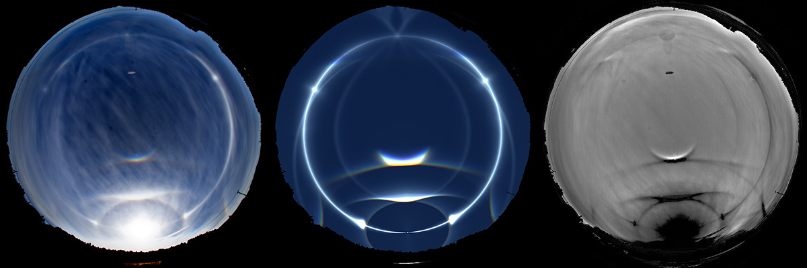
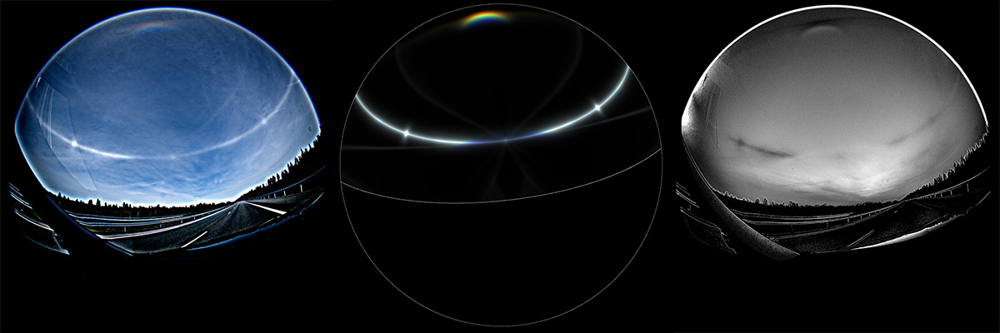

The raypath 1–3–2 in plate crystals lights up the parhelic circle. But at low sun elevations the circumzenith arc (raypath 1–3) steals light from this parhelic circle raypath, especially in the part of the sky opposite the sun. Some of the light still slips out through the prism face — but only up to a sun elevation of about 32°, after which the circumzenith arc raypath shuts down: light coming from the basal face (1) to the prism face (3) has so steep an angle that total internal reflection sets in, and the light can no longer escape.
This shutdown announces itself as a blue spot that creeps gradually along the parhelic circle, starting near the 120° parhelia and drifting toward the anthelic point as the sun climbs higher. The two blue spots (one from each side) edge closer together, and at a sun elevation of about 32° they meet and slip off the parhelic circle altogether — at the same moment the circumzenith arc vanishes.
So what is this blue spot? The explanation is simple but beautiful. When the angle of incidence inside the crystal sits just shy of the critical angle for total reflection, the blue end of the spectrum still squeezes through while the red wavelengths are already turned back into another path. The spots are really just the visible part of a full blue circle encircling the anthelic point. Usually, the blue circle can only be seen when artificial light is shone through diamond dust, but in this example that circle can be faintly made out in the photographs of a high cloud display.
Many raypaths involve an internal reflection somewhere inside the crystal, and they all behave in this same way once the geometry brings them to the brink of total internal reflection. With HaloPoint 3.0 you can explore all of these phenomena yourself.
In the image below, from left to right: the all-sky photograph, the simulation and the B-R processed photograph. The blue circle stands out on the B-R image, while in the leftmost photograph only the blue spots are easily discernible on the parhelic circle. This demonstrates the necessity for clever image processing, which creates nothing artificial but simply raises the signal-to-noise ratio of subtle features to bring them out.

In the image below, from left to right: the unsharp masked photograph, the simulation and the B-R processed photograph. The blue circle stands out on the B-R image, and one can almost see it also in the usm'd photo.
